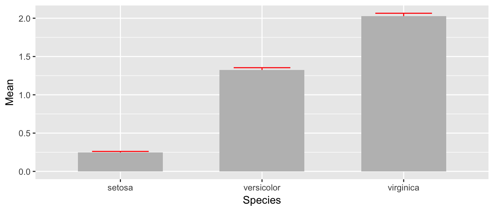
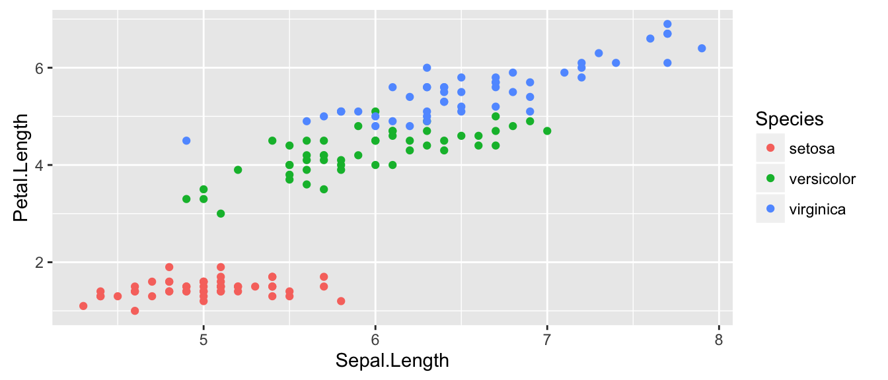
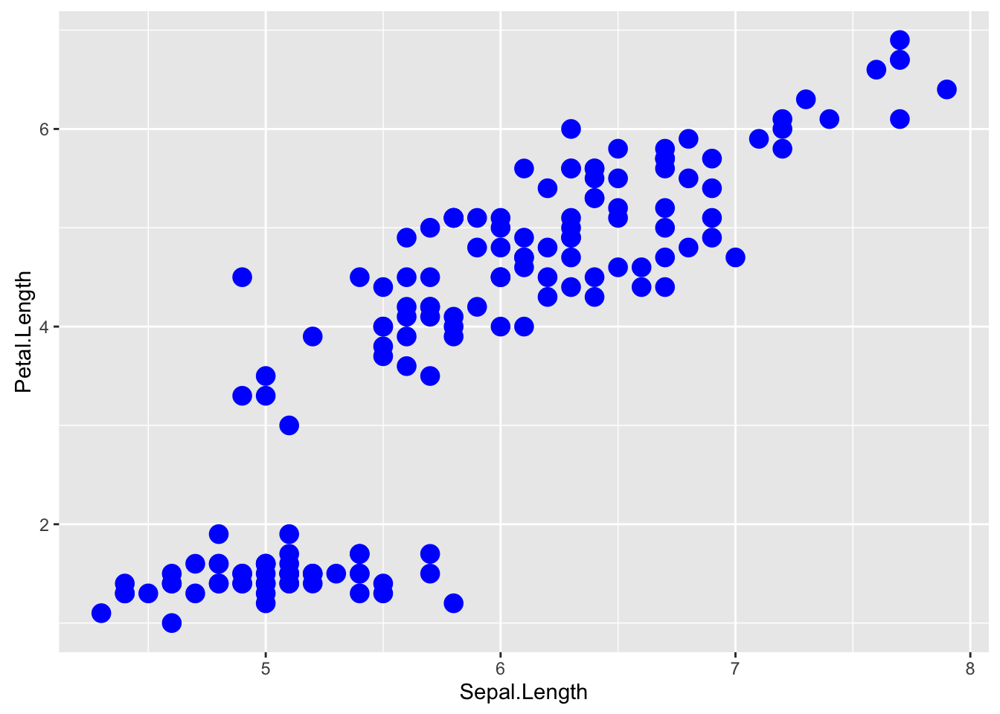
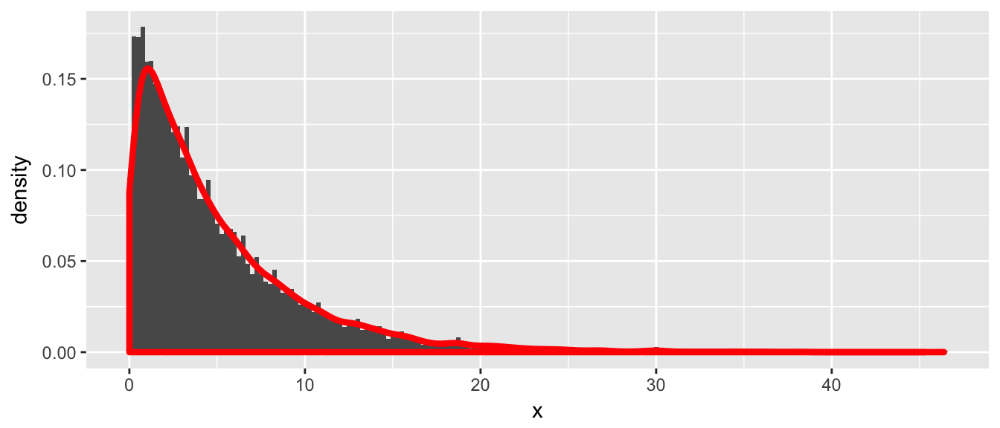
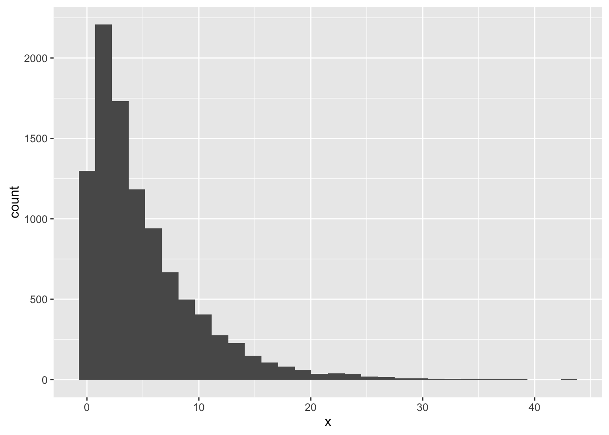
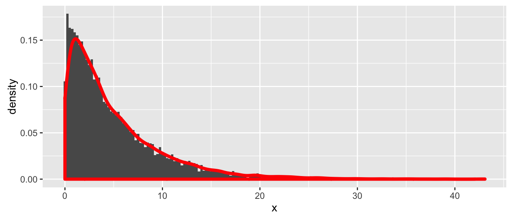
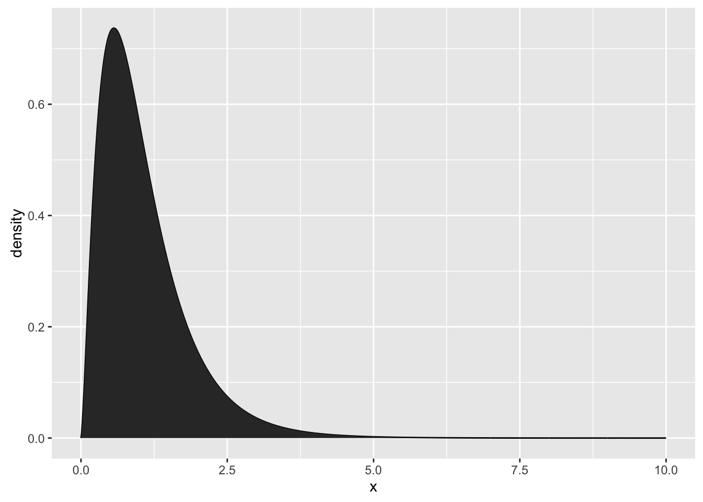
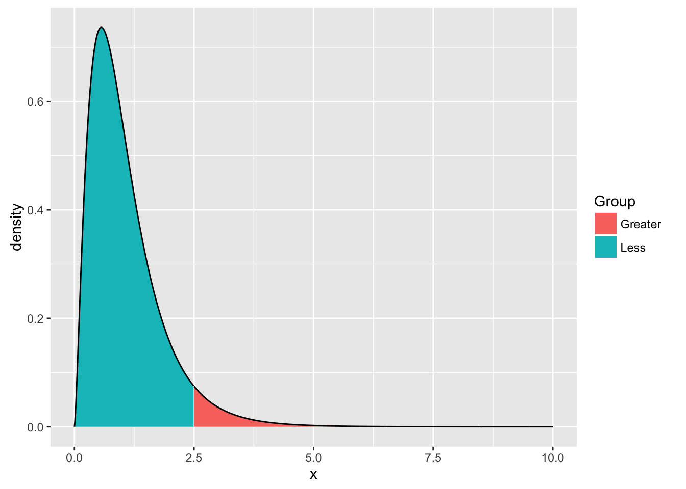

Chapter 10 Graphing using ggplot2
There are three major “systems” of making graphs in R. The basic plotting commands in R are quite effective but the commands do not have a way of being combined in easy ways. Lattice graphics (which the mosaic package uses) makes it possible to create some quite complicated graphs but it is very difficult to do make non-standard graphs. The last package, ggplot2 tries to not anticipate what the user wants to do, but rather provide the mechanisms for pulling together different graphical concepts and the user gets to decide elements to combine.
To make the most of ggplot2 it is important to wrap your mind around “The Grammar of Graphics”. The act of building a graph can be broken down into three steps.
Define what data we are using.
What is the major relationship we wish to exam.
In what way should we present that relationship. These relationships can be presented in multiple ways, and the process of creating a good graph relies on building layers upon layers of information. For example, we might start with printing the raw data and then overlay a regression line over the top.
Next, it should be noted that ggplot2 is designed to act on data frames. It is actually hard to just draw three data points and for simple graphs it might be easier to use the base graphing system in R. However for any real data analysis project, the data will already be in a data frame and this is not an annoyance.
These notes are sufficient for graphing simple graphing, but are not intended to be exhaustive. There are many places online to get help with ggplot2. One very nice resource is the website [http://www.cookbook-r.com/Graphs/] which gives much of the information available in the book R Graphics Cookbook which I highly recommend. Second is just googling your problems and see what you can find on websites such as StackExchange.
10.1 Basic Graphs
10.1.1 Scatterplots
To start with, we’ll make a very simple scatterplot using the iris dataset that will make a scatterplot of Sepal.Length versus Petal.Length, which are two columns in my dataset.
library(ggplot2)
ggplot( data=iris, aes(x=Sepal.Length, y=Petal.Length) ) +
geom_point( )
The data set we wish to use is specified using
data=iris.The relationship we want to explore is
x=Sepal.Lengthandy=Petal.Length. This means the x-axis will be the Sepal Length and the y-axis will be the Petal Length.The way we want to display this relationship is through graphing 1 point for every observation.
We can define other attributes that might reflect other aspects of the data. For example, we might want for the of the data point to change dynamically based on the species of iris.
ggplot( data=iris, aes(x=Sepal.Length, y=Petal.Length, color=Species) ) +
geom_point( )
The aes() command inside the previous section of code is quite mysterious. The way to think about the aes() is that it gives you a way to define relationships that are data dependent. In the previous graph, the x-value and y-value for each point was defined dynamically by the data, as was the color. If we just wanted all the data points to be colored blue and larger, then the following code would do that
ggplot( data=iris, aes(x=Sepal.Length, y=Petal.Length) ) +
geom_point( color='blue', size=4 )
The important part isn’t that color and size were defined in the geom_point() but that they were defined outside of an aes() function!
Anything set inside an
aes()command will be of the formattribute=Column_Nameand will change based on the data.Anything set outside an
aes()command will be in the formattribute=valueand will be fixed.
Next, I suppose I want to add a regression line (the line that best summarizes the relationship between Sepal.Length and Petal.Length) to each of these groups. We can do this by adding another layer to the graph, in this case, a smoother layer. The geom_smoother is intended to take a scatterplot of points and draw the best-fitting curve to the data. There are several options for how it choses to do this, but I’ll tell it to fit a regression line to each set of data. Below, we have a graph of data points, a regression line, and a confidence region for the line.
ggplot( data=iris, aes(x=Sepal.Length, y=Petal.Length, color=Species) ) +
geom_point( ) +
geom_smooth( method='lm' ) # fit a regression to each species
I typically don’t use this method because it has too many limitations as to how I fit the smoother. I prefer to fit a model to the data, calculate the predicted values along with whatever confidence intervals I want, and plot those directly using geom_line() and geom_ribbon()).
model <- lm( Petal.Length ~ Sepal.Length * Species, data=iris) # fit the model
iris <- cbind( iris, predict(model, interval='conf') ) # calc yhat, CI
ggplot(iris, aes(x=Sepal.Length, color=Species, fill=Species)) +
geom_ribbon( aes(ymin=lwr, ymax=upr)) +
geom_line( aes(y=fit)) +
geom_point( aes(y=Petal.Length))
10.1.2 Bar Charts
For displaying a categorical variable on the x-axis and a continuous variable on the y-axis, a bar chart is a good option. Here we consider a data set that gives the fuel efficiency of different classes of vehicles in two different years. This is a subset of data that the EPA makes available on [http://fueleconomy.gov]. It contains only model which had a new release every year between 1999 and 2008 and therefore represents the most popular cars sold in the US. It includes information for each model for years 1999 and 2008. The dataset is included in the ggplot2 package as mpg.
str(mpg)## Classes 'tbl_df', 'tbl' and 'data.frame': 234 obs. of 11 variables:
## $ manufacturer: chr "audi" "audi" "audi" "audi" ...
## $ model : chr "a4" "a4" "a4" "a4" ...
## $ displ : num 1.8 1.8 2 2 2.8 2.8 3.1 1.8 1.8 2 ...
## $ year : int 1999 1999 2008 2008 1999 1999 2008 1999 1999 2008 ...
## $ cyl : int 4 4 4 4 6 6 6 4 4 4 ...
## $ trans : chr "auto(l5)" "manual(m5)" "manual(m6)" "auto(av)" ...
## $ drv : chr "f" "f" "f" "f" ...
## $ cty : int 18 21 20 21 16 18 18 18 16 20 ...
## $ hwy : int 29 29 31 30 26 26 27 26 25 28 ...
## $ fl : chr "p" "p" "p" "p" ...
## $ class : chr "compact" "compact" "compact" "compact" ...First we could summarize the data by how many of each model there are in the different classes.
ggplot(mpg, aes(x=class)) +
geom_bar()
By default, the geom_box() just counts the number of cases and displays how many observations were in each class. If we were interested in knowing the mean highway fuel efficiency, we would have to summarize the data and calculate the mean for each class. Fortunately that is pretty easy to do.
library(dplyr) # for calculating the summary statistics
mpg.small <- mpg %>%
group_by(class) %>%
summarise(mean.hwy = mean(hwy),
sd.hwy = sd(hwy))
ggplot(mpg.small, aes(x=class, y=mean.hwy)) +
geom_bar( stat = 'identity' ) # no further summarization!
The stat=‘identity’ part is necessary to keep geom_bar() from doing any default summarization. We can add some error bars to show the standard deviation as well.
ggplot(mpg.small, aes(x=class, y=mean.hwy,
ymin = mean.hwy-sd.hwy,
ymax = mean.hwy+sd.hwy)) +
geom_bar( stat = 'identity' ) +
geom_linerange()
10.1.3 Box Plots
Boxplots are a common way to show a categorical variable on the x-axis and continuous on the y-axis. I actually prefer these over the barchart we did prior.
ggplot(mpg, aes(x=class, y=hwy)) +
geom_boxplot()
10.1.4 Geometries and Layers
One way that ggplot2 makes it easy to form very complicated graphs is that it provides a large number of basic building blocks that, when stacked upon each other, can produce extremely complicated graphs. A full list is available at [http://docs.ggplot2.org/current/] but the following list gives some idea of different building blocks.
These different geometries are different ways to display the relationship between variables and can be combined in many interesting ways.
| Geom | Description | Required Aesthetics |
|---|---|---|
geom_bar |
A barplot | x |
geom_boxplot |
Boxplots | x |
geom_density |
A smoothed histogram | x |
geom_errorbar |
Error bars | ymin, ymax |
geom_histogram |
A histogram | x |
geom_line |
Draw a line (after sorting x-values) | x, y |
geom_path |
Draw a line (without sorting x-values) | x, y |
geom_point |
Draw points (for a scatterplot) | x, y |
geom_ribbon |
Enclose a region, and color the interior | ymin, ymax |
geom_smooth |
Add a ribbon that summarizes a scatterplot | x, y |
geom_text |
Add text to a graph | x, y, label |
A graph can be built up layer by layer, where:
Each layer corresponds to a
geom, each of which requires a dataset and a mapping between an aesthetic and a column of the data set.– If you don’t specify either, then the layer inherits everything defined in the ggplot() command. – You can have different datasets for each layer!
Can add layers with a +, or you can define two plots and add them together (second one over-writes anything that conflicts).
10.2 Getting Fancy
10.2.1 Bar Plot
Suppose that you just want make some barplots and add \(\pm\) S.E. bars. This should be really easy to do, but in the base graphics in R, it is a pain. Fortunately in ggplot2 this is easy. First, define a data frame with the bar heights you want to graph and the \(\pm\) values you wish to use.
# Calculate the mean and sd of the Petal Widths for each species
library(dplyr)
stats <- iris %>%
group_by(Species) %>%
summarize( Mean = mean(Petal.Width), # Mean = ybar
StdErr = sd(Petal.Width)/sqrt(n()) ) %>% # StdErr = s / sqrt(n)
mutate( lwr = Mean - StdErr,
upr = Mean + StdErr )
stats## # A tibble: 3 x 5
## Species Mean StdErr lwr upr
## <fctr> <dbl> <dbl> <dbl> <dbl>
## 1 setosa 0.246 0.01490377 0.2310962 0.2609038
## 2 versicolor 1.326 0.02796645 1.2980335 1.3539665
## 3 virginica 2.026 0.03884138 1.9871586 2.0648414Next we take these summary statistics and define the following graph which makes a bar graph of the means and error bars that are \(\pm\) 1 estimated standard deviation of the mean (usually referred to as the standard errors of the means). By default, geom_bar() tries to draw a bar plot based on how many observations each group has. What I want, though, is to draw bars of the height I specified, so to do that I have to add stat='identity' to specify that it should just use the heights I tell it.
ggplot(stats, aes(x=Species)) +
geom_bar( aes(y=Mean), stat='identity') +
geom_errorbar( aes(ymin=lwr, ymax=upr) )
While this isn’t too bad, we would like to make this a bit more pleasing to look at. Each of the bars is a little too wide and the error bars should be a tad narrower than then bar. Also, the fill color for the bars is too dark. So I’ll change all of these, by setting those attributes outside of an aes() command.
ggplot(stats, aes(x=Species)) +
geom_bar( aes(y=Mean), stat='identity', fill='grey', width=.6) +
geom_errorbar( aes(ymin=lwr, ymax=upr), color='red', width=.4 )
The last thing to notice is that the order in which the different layers matter. This is similar to photoshop or GIS software where the layers added last can obscure prior layers. In the graph below, the lower part of the error bar is obscured by the grey bar.
ggplot(stats, aes(x=Species)) +
geom_errorbar( aes(ymin=lwr, ymax=upr), color='red', width=.4 ) +
geom_bar( aes(y=Mean), stat='identity', fill='grey', width=.6)
10.2.2 Histograms
Creating histograms of continuous data is a very common thing to do. The simplest way to do this in ggplot() is using the geom_histogram function. The simplest form is the the following:
data <- data.frame(x=rexp(10000, rate=1/5))
ggplot(data, aes(x=x)) +
geom_histogram() ## `stat_bin()` using `bins = 30`. Pick better value with `binwidth`.
Somewhat annoyingly, ggplot2 does not by default use an intelligent choice for the number of bins. Instead we are stuck investigating different bin-widths by hand. To do this, we set the number of bins via the binwidth argument. Notice that the y-axis is the number of observations in each bin. If we want the y-axis to be density (so that the area shaded has area 1), we just need to tell geom_histogram to have y=..density.. instead of the default.
ggplot(data, aes(x=x, y=..density..)) +
geom_histogram(binwidth=.25) 
Often I want to also add some sort of smoothed density plot to my histogram. The geom to do that is geom_density() which takes your x-values and creates a smoothed density function using kernel density algorithm with a normal kernel. To do this, we need both layers of my plot to have a y-axis of density.
ggplot(data, aes(x=x, y=..density..)) +
geom_histogram(binwidth=.25) +
geom_density(color='red', size=1.5)
10.2.3 Adjusting labels
To make a graph more understandable, it is necessary to tweak labels for the axes and add a main title and such. Here we’ll adjust labels in a graph, including the legend labels.
# Treat the number of cylinders in a car as a categorical variable (4,6 or 8)
mtcars$cyl <- factor(mtcars$cyl)
ggplot(mtcars, aes(x=wt, y=mpg, col=cyl)) +
geom_point() +
labs( title='Weight vs Miles per Gallon') +
labs( x="Weight in tons (2000 lbs)" ) +
labs( y="Miles per Gallon (US)") +
labs( color="Cylinders") 
10.2.4 Plotting distributions
Often I need to plot a distribution and perhaps shade some area in. In this section we’ll give a method for plotting continuous and discrete distributions using ggplot2.
10.2.4.1 Continuous distributions
First we need to create a data.frame that contains a sequence of (x,y) pairs that we’ll pass to our graphing program to draw the curve by connecting-the-dots, but because the dots will be very close together, the resulting curve looks smooth. For example, lets plot the F-distribution with parameters \(\nu_{1}=5\) and \(\nu_{2}=30\).
# define 1000 points to do a "connect-the-dots"
plot.data <- data.frame( x=seq(0,10, length=1000) ) %>%
mutate( density = df(x, 5, 30) )
ggplot(plot.data, aes(x=x, y=density)) +
geom_line() + # just a line
geom_area() # shade in the area under the line
This isn’t too bad, but often we want to add some color to two different sections, perhaps we want different colors distinguishing between values \(\ge2.5\) vs values \(<2.5\)
plot.data <- data.frame( x=seq(0,10, length=1000) ) %>%
mutate( density = df(x, 5, 30),
Group = ifelse(x <= 2.5, 'Less','Greater') )
ggplot(plot.data, aes(x=x, y=density, fill=Group)) +
geom_area() +
geom_line() 
10.2.4.2 Discrete distributions
The idea for discrete distributions will be to draw points for the height and then add bars. Lets look at doing this for the poisson distribution with rate parameter \(\lambda=2\).
plot.data <- data.frame( x=seq(0,10) ) %>%
mutate( probability = dpois(x, lambda=2) )
ggplot(plot.data, aes(x=x)) +
geom_point( aes(y=probability) ) +
geom_linerange(aes(ymax=probability), ymin=0) 
The key trick here was to set the ymin value to always be zero.
10.3 Exercises
For the dataset trees, which should already be pre-loaded. Look at the help file using
?treesfor more information about this data set. We wish to build a scatterplot that compares the height and girth of these cherry trees to the volume of lumber that was produced.- Create a graph using ggplot2 with Height on the x-axis, Volume on the y-axis, and Girth as the either the size of the data point or the color of the data point. Which do you think is a more intuitive representation?
- Add appropriate labels for the main title and the x and y axes.
Consider the following small dataset that represents the number of times per day my wife played “Ring around the Rosy” with my daughter relative to the number of days since she has learned this game. The column yhat represents the best fitting line through the data, and lwr and upr represent a 95% confidence interval for the predicted value on that day.
Rosy <- data.frame( times = c(15, 11, 9, 12, 5, 2, 3), day = 1:7, yhat = c(14.36, 12.29, 10.21, 8.14, 6.07, 4.00, 1.93), lwr = c( 9.54, 8.5, 7.22, 5.47, 3.08, 0.22, -2.89), upr = c(19.18, 16.07, 13.2, 10.82, 9.06, 7.78, 6.75))Using
ggplot()andgeom_point(), create a scatterplot withdayalong the x-axis andtimesalong the y-axis.Add a line to the graph where the x-values are the
dayvalues but now the y-values are the predicted values which we’ve calledyhat. Notice that you have to set the aesthetic y=times for the points and y=yhat for the line. Because eachgeom_will accept anaes()command, you can specify theyattribute to be different for different layers of the graph.Add a ribbon that represents the confidence region of the regression line. The
geom_ribbon()function requires anx,ymin, andymaxcolumns to be defined. For examples of usinggeom_ribbon()see the online documentation: [http://docs.ggplot2.org/current/geom_ribbon.html].ggplot(Rosy, aes(x=day)) + geom_point(aes(y=times)) + geom_line( aes(y=yhat)) + geom_ribbon( aes(ymin=lwr, ymax=upr), fill='salmon')What happened when you added the ribbon? Did some points get hidden? If so, why?
Reorder the statements that created the graph so that the ribbon is on the bottom and the data points are on top and the regression line is visible.
The color of the ribbon fill is ugly. Use google to find a list of named colors available to
ggplot2. For example, I googled “ggplot2 named colors” and found the following link: [http://sape.inf.usi.ch/quick-reference/ggplot2/colour]. Choose a color for the fill that is pleasing to you.Add labels for the x-axis and y-axis that are appropriate along with a main title.
The R package
babynamescontains a single dataset that lists the number of children registered with Social Security with a particular name along with the proportion out of all children born in a given year. The dataset covers the from 1880 to the present. We want to plot the relative popularity of the names ‘Elise’ and ‘Casey’.- Load the package. If it is not found on your computer, download the package from CRAN.
- Read the help file for the data set
babynamesto get a sense of the columns - Create a small dataset that only has the names ‘Elise’ and ‘Casey’.
Make a plot where the x-axis is the year and the y-axis is the proportion of babies given the names. Use a line to display this relationship and distinguish the two names by color. Notice this graph is a bit ugly because there is a lot of year-to-year variability that we should smooth over.
We’ll use dplyr to collapse the individual years into decades using the following code:
small <- babynames %>% filter( name=='Elise' | name=='Casey') %>% mutate( decade = cut(year, breaks = seq(1869,2019,by=10) )) %>% group_by(name, decade) %>% summarise( prop = mean(prop), year = min(year))Now draw the same graph you had in part (d).
Next we’ll create an area plot where the height is the total proportion of the both names and the colors split up the proportion.
ggplot(small, aes(x=year, y=prop, fill=name)) + geom_area()This is a pretty neat graph as it show the relative popularity of the name over time and can easily be expanded to many many names. In fact, there is a wonderful website that takes this same data and allows you select the names quite nicely: [http://www.babynamewizard.com/voyager#prefix=&sw=both&exact=false]. My wife and I used this a lot while figuring out what to name our children. Notice that this site really uses the same graph type we just built but there are a few extra neat tricks.